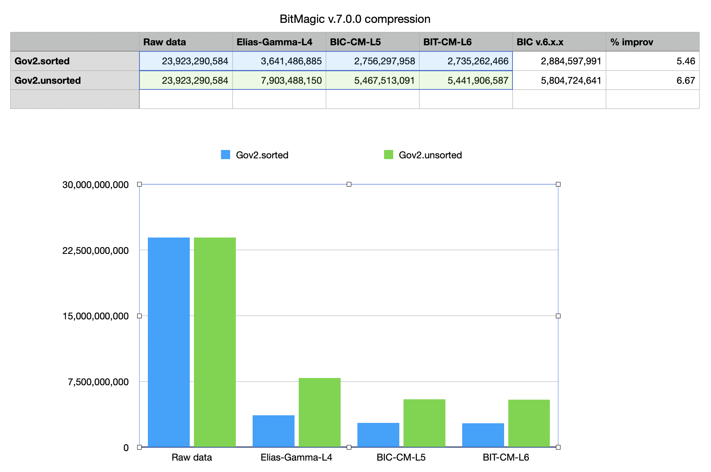

Version 7.0.0
July 30, 2020Release Notes
BitMagic v.7.0.0 focuses on improving serialization compression and introduces changes in serialization format.
- BitMagic supports Binary Interpolative Coding as a compression method for lists of bits and RLE GAPs. New version made significant improvements to make serialized bit-vectors and sparse containers smaller to improve storage costs and transfer speed. The focus of this improvement was to better process very sparse bit-vectors. A one-dimensional bit-vector consists of blocks divided on word boundaries and encoded in chunks. Blocks are grouped into fixed depth hierarchical compression structure. Version 7 makes in-depth analysis of groups and determines where and how do escalation of compression window to save space, reduce amount of unnecessary block headers. Another optimization was to more use variable byte coding for storing technical information within serialized stream.
-
New version adds another compression layer (layer 6) which is a new default using new statistics and cut offs to improve compression rate vs time spent. At the same time performance of compression was improved by optimizations, so overall Level 6 compression time is only slightly higher than Level 5 time in the version 6.4.0. (Plan is to return to performance optimizations in the following release).
BitMagic library uses bit-vectors as buillding blocks for succinct containers, this release improves serialization-compression of other succinct structures.
This serialization format change supports protocol evolution, new version is backward compatible with the old BLOBs, you don't have to re-serialize the old BLOBs and convert databases. Old readers will NOT be able to read new BLOBs without recompilation.
- Version 7.0.0 fixes a rare, but critical bug in Rank-Select index algorithm.
Download v7.0.0 (Sourceforge) GitHub
Compression rates comparison

Compression comparison in bytes. BitMagic v7.0.0 improves Binary Interpolative Coding compression rates on both level 5 (old default) and level 6 (new default). Measured on Gov2 benchmark set of inverted lists (sorted and unsorted) it gives up to 6% improvement, which should significantly imrove storage efficiency for very large systems.
Acknowledgements
Thanks to Daniel Lemire and Leonid Boytsov (authors of Roaring Bitmaps) for providing benchmarking sets of inverted lists.